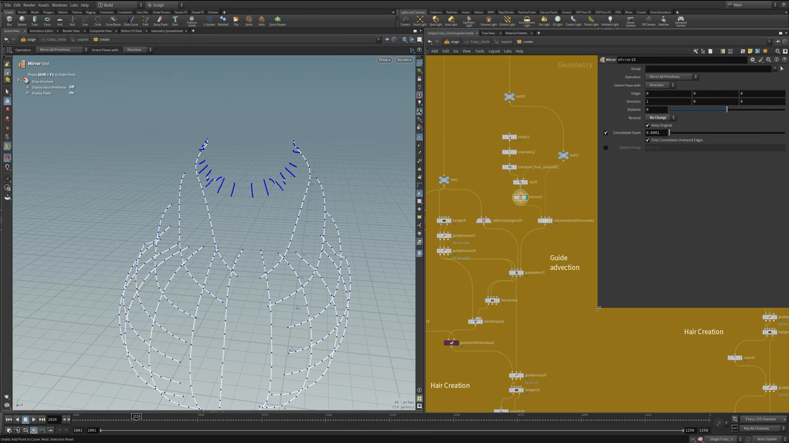
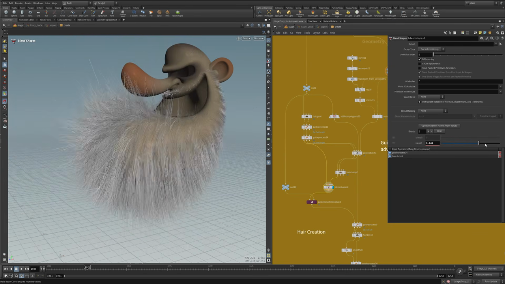
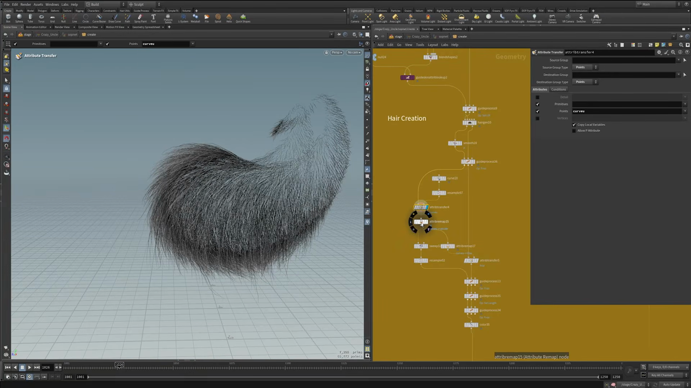
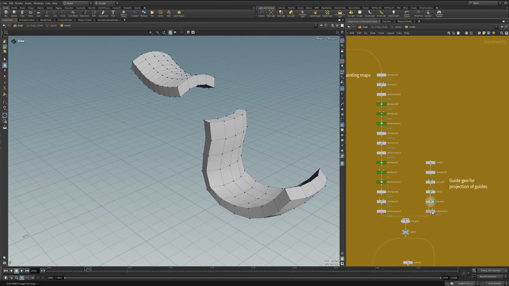

Houdini キャラクター制作 5 — カーブとマスクでヒゲと髪をグルーミングする
出典: Character Creation 5 | Hair and Groom Workflow （SideFX 公式チュートリアル Create a Procedural Character の第5回 / 講師 Roy Kristoffersen さん / Houdini 21 / 14:27 / 英語）。 このページは、上記の動画を見ながら自分用にまとめた日本語の学習メモです。SideFX 公式の翻訳ではありません。 シリーズ全体は第0回にまとめています。
この回で扱うこと
Crazy Uncle の特徴になっている、あの大きなヒゲと髪と眉を作る回です。 カーブでヘアの流れを決め、手で塗ったマスクで長さと密度を制御します。
Attribute Paintでマスクを描き、長さと密度に変換する- カーブから
Volume Velocity from CurvesとGuide Advectでヘアの流れを作る Guide Skin Attribute Lookup（これが無いと変形に追従しません）curveuをpscaleに変換して房の太さに変化を付ける- 髪のために投影用のガイドジオメトリを別に作る
1. マスクを描く
すべての出発点は頭のジオメトリです。まず Subdivide でかなり細かく割ります。
これは Attribute Paint で細かいマスクを塗れるようにするためです。
マスクの塗りはプロシージャルではなく手作業です。 講師の方も「ここは手で塗っている」とはっきり言っていました。 ただし、塗ったあとの処理は毎回同じ型の繰り返しになっています。
Attribute Paint → Attribute Blur → Attribute Remapこの3つ組が、長さ・密度・リフトそれぞれの分だけ並んでいます。
| マスク | 用途 |
|---|---|
| length | 毛の長さ。あご先を長く、口まわりを短く |
| density | 毛の密度。length から Attribute Remap で作っています |
| lift | ヒゲをどれだけ持ち上げるか |
| direction（髪） | 前髪用と後ろ髪用の2種類 |
Attribute Blur でならしてから Attribute Remap をかけると、
「ここには長い毛を一切生やさない」といった調整ができます。
2. カーブでヘアの流れを決める

カーブを引く
Curveでヒゲの流れに沿った線を描きます。 このときジオメトリにスナップさせません。 スナップすると既存のものを壊してしまうため、とのことですResampleで点を整えますTransformで少し外側に押し出しますRayでジオメトリの上に乗せますMirrorで左右に配置します
Guide Advect のためのセットアップ
カーブに沿って毛を流すには、いくつか下ごしらえが要ります。
| ノード | 役割 |
|---|---|
Volume Velocity from Curves | 引いたカーブから速度ボリュームを作ります |
VDB from Polygons | 頭のジオメトリから skin VDB（衝突用）を作ります |
Hair Generate | マスクの density に従って毛を生やします |
Guide Process | Set Length で長さを与えます。マスクの length が効きます |
Guide Advect | 速度ボリュームに沿って毛を流します |
Hair Clump | 毛を房にまとめます |
この Guide Advect が効いた瞬間に、
ばらばらだった毛が一斉にカーブの流れに沿います。
動画でも切り替えて見せていて、ここが一番わかりやすい変化でした。
3. ブレンドと、忘れると動かない設定

Blend Shapes で、Advect 前とAdvect 後を混ぜています。
上の画像では入力に guideprocess14（流す前）と hairclump2（流したあと）が並んでいて、
ブレンド値は 0.644 でした。完全に流しきらず、少し元の向きを残しています。
Guide Skin Attribute Lookup
ここが一番の落とし穴です。
Guide Skin Attribute Lookup を通しておかないと、
キャラクターが変形したときに毛が付いてきません。
このノードが skinprim と skinprimuv というアトリビュートを付けてくれて、
これがあって初めて毛が変形したメッシュに追従します。
動画でも「これが無いと動かない、とても重要」と2回繰り返して強調していました。
4. 房の太さに変化を付ける

ここでも第2回から続く curveu の使い回しが出てきます。
- ガイドから新しく
Hair Generateをかけます SmoothをかけますCurve→Resampleで基準になるカーブを作りますAttribute Transferでcurveuを毛のカーブに転送しますAttribute Remapでそれをpscaleに変換しますSweepに渡します。Apply Scale Along Curve がpscaleを拾います
これで根元と毛先で房の太さが変わり、なめらかに変化します。 ランプを触れば房のまとまり具合を全体的に調整できます。
Sweep と Resample の設定
この Sweep は四角ポリゴンを出しません。columns だけを出していて、
それがそのまま毛になります。
そのあとの Resample で Subdivision Curves を選ぶのがポイントでした。
Straight Edges のままだと毛がカクカクして先が尖ってしまいますが、
Subdivision Curves にするとなめらかになります。
動画では両方を切り替えて違いを見せていました。
最後に Guide Process の Frizz と Set Length を重ねて、
Color を当てて仕上げます。
5. 眉毛
ヒゲとまったく同じ流れです。
- マスクを塗って
Attribute Blur、そのあとAttribute Remapで境界をはっきりさせます Lineを並べてRay→MirrorVolume Velocity from Curves→Guide AdvectBlend Shapesで少し外側に持ち上がるように混ぜますGuide Skin Attribute Lookupを忘れずに通します- Lift を少し足して向きを出します
- そのガイドから
Hair Generate→ Frizz →Sweep→Resample→ さらに Frizz
6. 髪 — 投影用のガイドジオメトリを作る

髪はヒゲより一段込み入っていました。頭の表面に直接カーブを乗せるのではなく、 投影用のジオメトリを別に作って、そこにカーブを乗せています。
Curve → Resample → Sweep → Edit → Thicken → Subdivideできあがるのが上の画像のリボンのような面です。 講師の方も「これを見て何だと思うかもしれないが、最後まで見ればわかる」と言っていました。
この面に対してカーブを Ray で乗せると、
頭の表面の凹凸に引きずられずに、髪として自然な流れのカーブが作れます。
あとは同じく Volume Velocity from Curves → Guide Advect →
Guide Skin Attribute Lookup と流します。
そこから先は Soft Transform を大量に重ねて形を追い込んでいて、
「これは細かい調整の積み重ねなので、見てもらったほうが早い」という説明でした。
最後は Guide Process → Hair Generate → Frizz → Sweep →
Resample → Frizz → Set Length という、これまでと同じ並びで仕上げています。
この回のまとめ
- マスクは
Attribute Paint→Attribute Blur→Attribute Remapの3つ組を、用途の数だけ並べます - length マスクから
Attribute Remapで density を作れば、長さと密度が連動します - ヘアの流れは
Volume Velocity from Curves+Guide Advectで作ります Guide Skin Attribute Lookupを通さないと、変形に毛が追従しません（skinprim/skinprimuv）Blend Shapesで Advect の前後を混ぜると、流しすぎを抑えられますcurveu→pscale→Sweepで房の太さに変化が付きますResampleは Subdivision Curves にしないと毛がカクつきます- 髪は頭に直接乗せず、投影用のガイドジオメトリを別に作るときれいに流れます
次の第6回は KineFX Procedural Skinning です。ウェイトを塗らずに済ませるスキニングに入ります。